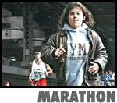
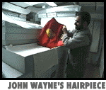
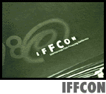
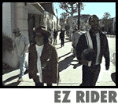

|


|
|


| Episode #12 -
Season Two
"So it's goodbye NY, NY. Next stop Washington, DC."
"When the President shows independent films at the White House and
the
Smithsonian opens its doors to the likes of us, you know indie film
has
permeated the whole culture." |
 |
Marathon:
Split Screen RV driver Amy Elliott and filmmaking partner Lizzie Donius
compare the relative difficulty of making a film ("Headless") vs. running
the New York City Marathon. They did both.
|
|
 |
John
Wayne's Hairpiece
Dorothy's ruby slippers are on public
display, but where do you go to see
her socks? Or John Wayne's hairpiece? Or Superman's cape?
Smithsonian
Institution's Historian David Shayt takes us behind the scenes.
|
|
 |
How'd You
Do That?: IFFCON
Yvonne Welbon travels to San
Francisco's International Film Financing
Conference (IFFCON) to try to answer the biggest question in indie
film:
Where is the money and how do I get it?
|
|
 |
EZ Rider
As the miles click off on the Split
Screen odometer, Filmmakers Doug
Stone and P.H. O'Brien track obsessive fans Jack Barth and Trey
Ellis from
Los Angeles to Louisiana.as they pay tribute to the movie that
seemed to
send half the population out on the road looking for America -
1969's
"Easy Rider." With the help of a Chevy Venture minivan and Dan
"Grizzly
Adams" Haggerty, they recapture and rekindle that 30-year-old "Easy
Rider"
spirit
Episode #12 Credits
|
|
|
|